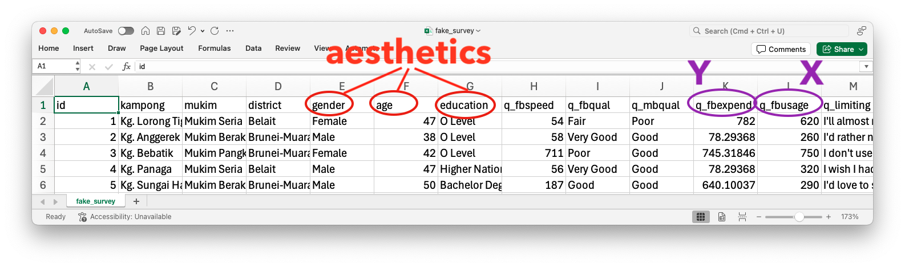
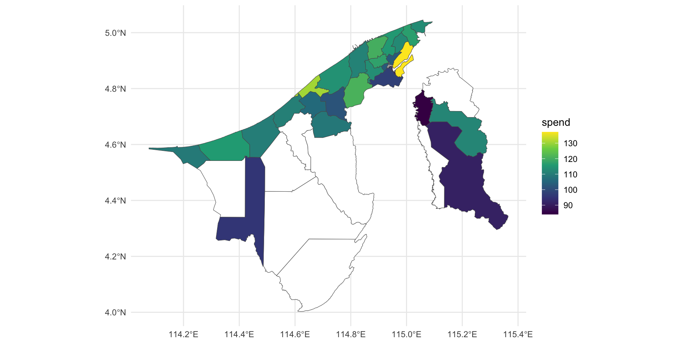
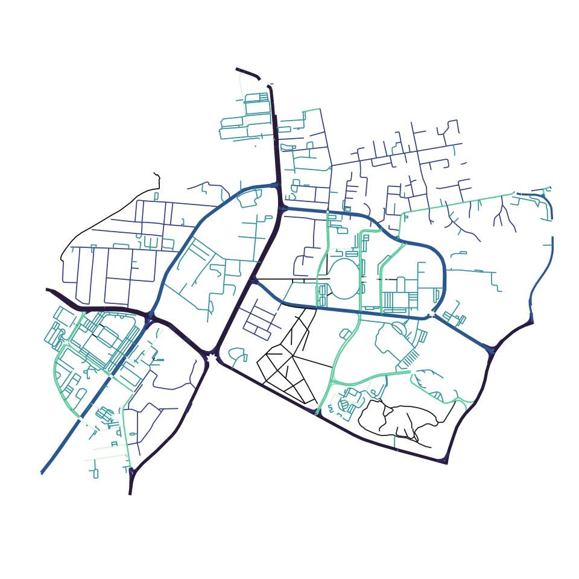

[1] "Hello, World!"[1] 3[1] 1
[1] 2
[1] 3
[1] 4
[1] 5AITI Talk
![]()
Assistant Professor in Statistics, Universiti Brunei Darussalam
Visiting Fellow, London School of Economics and Political Science
May 21, 2025


Emphasis on writing reproducible R code
Appreciate that there’s a leaRning curve
Goal of the talk is to show what R is capable of

At its core, statistics is the science of understanding variability.



A statistical graphic is a…



Any \((x,y)\) coordinate data, e.g. locations of

A collection of points connected by lines, e.g.

A closed two-dimensional area formed by connecting a finite number of line segments, e.g.

Quarto is an open-source scientific and technical publishing system. It enables you to create dynamic documents, reports, presentations, and websites using R code and Markdown language.
DEMO See report.qmd file